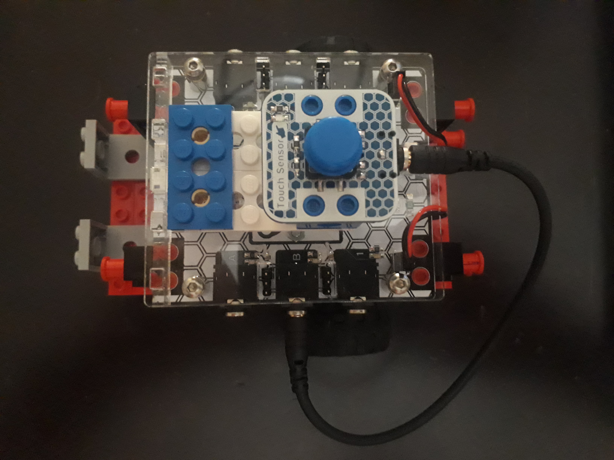

En esta práctica, se va a instalar un pulsador al robot Miibot para que le podemos indicar el inicio y/o finalización de una tarea.
De dispondrá en la parte de arriba y se conectará con un cable al puerto B de la Controladora.
La disposición sería la siguiente:

Fuente propia(Dominio público)
¿Qué es el Touch Sensor?
Este módulo consiste en un pulsador.
Un pulsador tiene dos estados posibles: conectado o desconectado, ON o OFF, 1 ó 0, HIGH o LOW
Por ello, se considera como un sensor digital.
Práctica 1
En esta práctica, se va a ver el funcionamiento del Touch Sensor.
El algoritmo que se va a desarrollar es el siguiente:
Inicio,
Esperar hasta que el Touch Sensor (B) está actividado (HI),
Una vez pulsado, el robot avanzará a una determinada velocidad durante tres segundos,
Se detendrá,
Esperar hasta que volvamos a pulsar el Touch Sensor,
retrocederá al punto inicial,
y se detendrá.
El código en Crumble sería:
Fuente propia(Dominio público)
Si quisiéramos que este ciclo se repitiera indefinidamente, deberíamos introducir todo el código en un bucle "do forever loop", quedando del siguiente modo:
Fuente propia(Dominio público)
Práctica 2
Para esta práctica, vamos a cambiar el Touch Sensor de posición. Se va a colocar en la parte delantera.
Fuente propia(Dominio público)
De tal forma que vamos a diseñar un algoritmo que permite al robot retroceder y avanzar en una dirección distinta si el Touch Sensor, choca contra un objeto que se encuentre al avanzar.
El algoritmo sería:
Iniciar,
Bucle infinito,
Si Touch Sensor está pulsado,
El robot se parará unos milisegundos,
Retrocederá un poco
y girará un determinado grado
para continuar avanzando
Si no se cumple esa condición,
el robot avanzará indefinidamente.
El código realizado en Crumble será:
Fuente propia(Dominio público)
Práctica 3
Al pulsar el Touch Sensor se puede detectar que comienza a avanzar inmediatamente mientras que el dedo que presiona está ejerciendo una fuerza sobre el sensor provocando que el robot se frene o se levante ligeramente desviando su trayectoria.
Ese problema lo solucionamos añadiendo, después de pulsar el Touch Sensor, un tiempo de espera de milisegundos.
Para mostrar esta situación, vamos a hacer un algoritmo que ejemplifique esta situación.
Iniciar,
En un bucle repetitivo de una serie de veces,
Esperamos hasta que pulsemos el botón del Touch Sensor,
para que avancemos durante unos segundos,
paremos los motores,
retrocedamos,
para finalizar parando los motores.
Se puede jugar, según el tiempo que se programe, las veces pulsadas y la velocidad, cuán de cerca se queda de un punto que se establezca.
El código de Crumble, sería:
Fuente propia(Dominio público)
Tarea 1
Crear un algoritmo que haga que el robot se mueva por la periferia de una baldosa.
Cada vez que tenga que girar, se tendrá que pulsar el Touch Sensor, de tal forma, que la pulsación provocará el giro de 90º y el avance de una arista, deteniéndose de nuevo a la espera de una nueva pulsación.
Y así, sucesivamente.
Tarea 2
Diseñar un laberinto con cajas.
Crear un algoritmo para que el Miibot al chocar con una pared, se detenga, retroceda un poco, gire 90º y avance. Y así sucesivamente, hasta que consiga salir.
Realizar el programa en Crumble y transferir a Miibot.